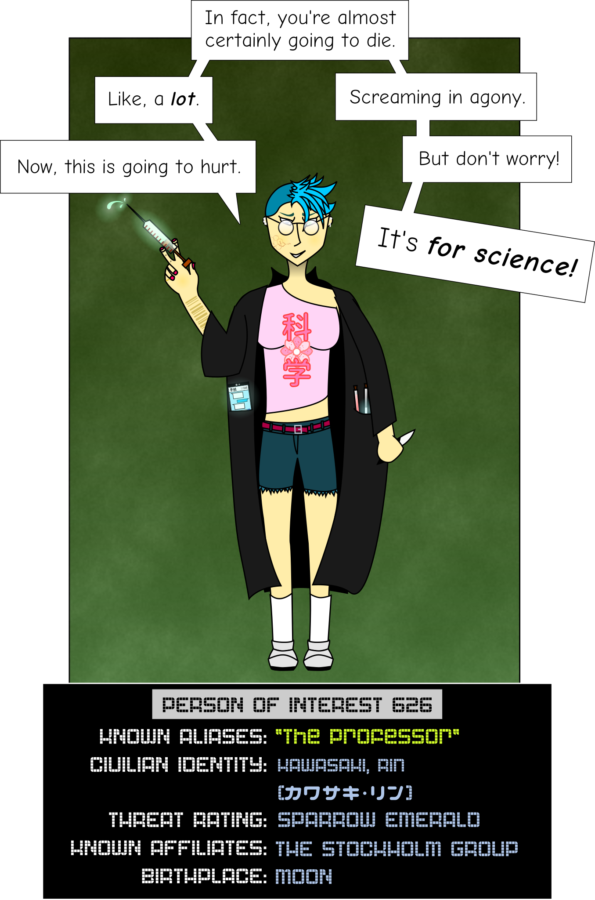

FILE REQUEST
| FILE IDENTIFIER | F02.626 |
|---|---|
| FILE TITLE | "Person of Interest 626 (KAWASAKI Rin)" |
| SECURITY CLASS | TSUNAMI HERON |
| USER IDENTITY | U-23719 |
|---|---|
| USER CLEARANCE | LONDON LILAC |
| ACCESS LOCATION | SUBSTATION 53 :: TERMINAL 76 |
| USER CODEWORD CLEARANCES | |
| * SOLEMN CANDLE | * EMPTY HEARTH |
| * MYSTIC PINES | * FORGOTTEN VIGIL |
| * SORROWFUL CURRENT | |
< < REQUEST SENT > >
- This request has been logged for security purposes. Be advised that any network traffic may be selected at random for audit by the Clearance Review Board.
< < ACCESS GRANTED > >
- Displaying file
Person of Interest 626 (KAWASAKI Rin)
Overview
Dr. Kawasaki Rin (川崎凛博士) was formerly a "BERLIN BLACK" researcher operating under the direct supervision of the Chairwoman. However, on 2008-[CL: TEMPEST EGRET], Dr. Kawasaki absconded with hundreds of confidential files, most of which were classified at "TYPHOON EAGLE." She is believed to have been operating underground since then, and only recently surfaced to join the Stockholm Group. Her only other known affiliate at present is the Facebook page "I Fucking Love Science," which she moderates.
As a "BERLIN BLACK" researcher, Dr. Kawasaki was responsible for a number of the most vital and confidential projects undertaken by Research & Development during her tenure, and her continued freedom is considered a Level 1 threat.
Dr. Kawasaki is known to speak Japanese and English natively, and has acquired Russian, Arabic, Swahili, Yup'ik, and Ancient Sumerian.
Threat analysis
Person of Interest 626 is physically unimposing, with no martial arts training, small stature, and noted lack of focus. She is not known or suspected to be capable of any form of outside-context combat. Any trained agent should be able to capture her with ease. However, Dr. Kawasaki is rarely seen without bodyguards, and should be considered armed at all times.
She has also been noted for her amoral and sadistic tendencies, and has previously shown no compunction against taking civilian hostages. Any capture effort should thus attempt to isolate her from innocents who might be caught in the crossfire.
Politically, Dr. Kawasaki is well-connected, although her specific connections and allies are known to fluctuate due to her unstable temperament and impenetrable schemes. Dr. Kawasaki should therefore be isolated from as many potential allies as possible before any attempt to capture her is made, as she is an invaluable asset to any Group of Interest and efforts to impede or recover her must be expected.
Psychological profile
Person of Interest 626 is deeply amoral, and was diagnosed with clinical psychopathy shortly before her departure from the Department. She has shown little interest in other people except as test subjects, with infrequent exceptions for those colleagues or contemporaries she regards as equals. She does, however, show extreme enthusiasm in teaching positions, and clearly enjoys sharing the fruits of her work with others, particularly children.
While distractable and absentminded in the short scale, Dr. Kawasaki has shown a remarkable facility for long-term planning. As demonstrated during the Syracuse Fiasco, [CL: TEMPEST EGRET]
Kawasaki has demonstrated on many occasions that she is motivated primarily by a devotion to science. She seeks to expand human knowledge and understanding at any cost, and she is relentless in her pursuit of scientific advancement. Attempts to alter her behavior through persuasion should therefore be grounded not in ethics but in methodology; she will typically abandon or alter her schemes if convinced that they would produce flawed data.
Nonetheless, Kawasaki's extreme sadism is a major factor in her decision-making, and her research is characterized by unnecessary or avoidable cruelty. She only anaesthetizes test subjects when necessary for the success of her procedures, rarely sterilizes her equipment, and casually discards subjects without euthanasia after they have served their purpose.
To summarize: In the words of her former colleague at the Tunguska Facility, Dr. [CC: SHATTERED FOREST], "She likes the sound of screams."
Personnel history
Date of Recruitment: [CL: TEMPEST EGRET]
Division: Research & Development
Notable Projects: [CL: TEMPEST EGRET]
Specialties: Bioweapons, [CL: TEMPEST EGRET]
Disciplinary Actions:
- 7 ethics citations
- 4 suspensions for violence against coworkers
- 1 investigation for misuse of classified information (found innocent)
- 219 recorded complaints from subordinates
- 2 suspensions for psychiatric evaluation